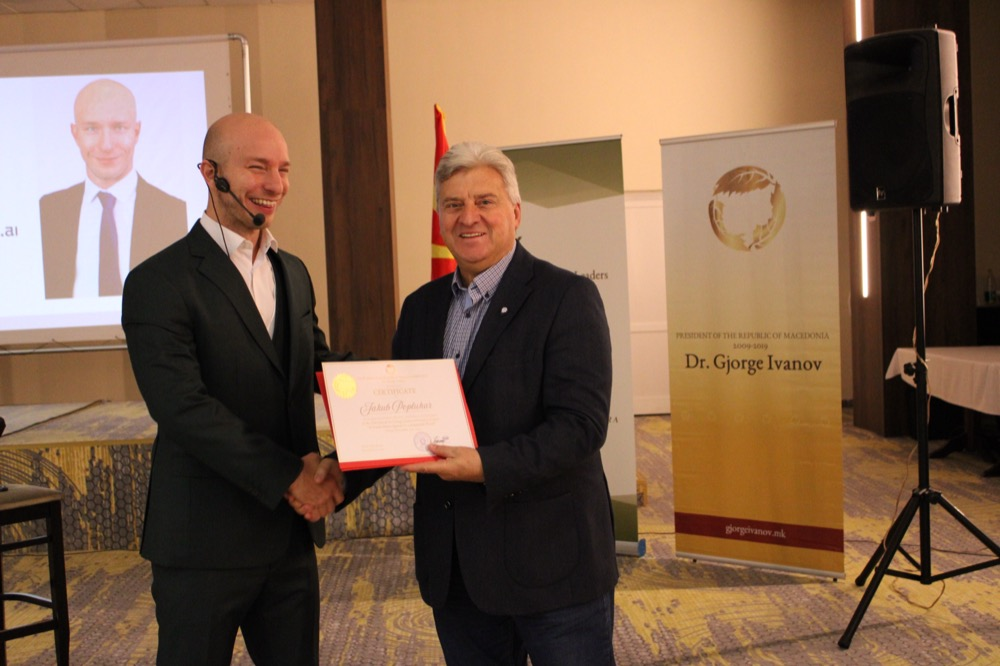

AI is not another tool to learn.
It is a thinking partner for your team.
I run hands-on AI trainings where project leaders stop watching slides and start solving their own problems live, using AI to see their work, and their team, through a different set of eyes.
Jakub Popluhar, M.Ed.
I train corporate teams and leaders to put AI to work in their daily practice, not in theory but by building something real in the room. My background combines applied AI with consumer psychology, so I work on both sides of adoption: the technology, and the humans who have to actually use it.
I deliver accredited trainings through ARS Akademie and work with organizations across the DACH region. I met Enver at ViennaUP, where Europe's startup and innovation community gathers each year.
- ✓ Corporate AI trainer, ARS Akademie (accredited), Hill Woltron, and others
- ✓ M.Ed., educator by training, which shows in how the room is run
- ✓ Consumer psychology lens on technology adoption
- ✓ Speaker at President Ivanov's School for Young Leaders
On stage with heads of state
President Ivanov's School for Young Leaders
16th cohort · Ohrid, North Macedonia · November 2025
Shared the podium with
- Katalin NovákFormer President of Hungary
- Prof. Dr. Jeffrey SachsColumbia University
- Lt. Gen. Michael DubieStrategic Leadership
- Prof. Djordjija PetkoskiWharton School, AI & Sustainability

"Creative, interactive methods and practical insights into consumer psychology."
Participant evaluation, rated "among the most transformative sessions"
An accredited, active AI trainer
I am an accredited trainer with ARS Akademie, one of the leading professional-development institutes in Austria. These are open AI seminars I am running in the coming weeks, a sense of the level and the topics:
Built around how project managers actually work
AI as a thinking partner
Not "ask the chatbot a question." Using AI to pressure-test a decision, surface blind spots, and reframe a stuck problem, the way a good colleague would, on demand.
Seeing team dynamics through different eyes
Run a situation through different perspectives (the stakeholder, the skeptic, the new joiner) to understand a team before a hard conversation, not after it.
Hands-on, never frontal
Every participant works on their own real project. By the end of a session they have produced something they can use on Monday, not a notebook full of slides.
From PMI Infinity to daily practice
PMI already gives the profession AI tools institutionally. I close the gap between "the organization has AI" and "I personally use it well, every day" for each member in the room.
Every group is different. The final mix is shaped around your members and the work they actually do.
Formats
Two-Day Intensive
- Day 1: the foundation, working productively with AI, first real outputs built live
- Day 2: applied to each participant's own projects, plus the team-dynamics work
- AI as a problem-solving partner: pressure-testing decisions, reframing stuck problems
- Everyone leaves with working AI workflows they own and can reuse
One-Day Focused
- One sharp theme: AI as a problem-solving partner for project leaders
- From "I can use ChatGPT" to using AI well, every day
- Fully hands-on, built on real cases the participants bring
- A strong first step that can grow into the two-day format
This page is an introduction, not a quote. Once we know who the training is for and how many people, I will put together a proper proposal.
Proof
"I run a martial-arts studio, tech is not my world. I didn't even know where the app was. 45 minutes later I had an AI project for member acquisition, and the wild part: the AI itself helped me ask the right questions. On my own I would never have got there."

ZR Team Vienna
"It was incredible! It completely changed how I see business, and how we should be doing business. I booked the second session immediately."
What I'd need to put a proper proposal together
This page is an introduction, not a quote. The format and the price depend on the answers below. Once I have them, I'll send a concrete proposal for PMI Croatia.
Let's design the right format for your members.
If this fits what PMI Croatia is looking for, the next step is a short call to understand your members and what you want them to walk away with. From there I will put together a concrete proposal.